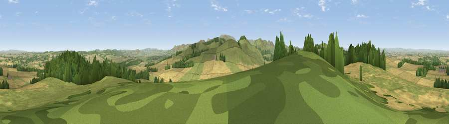

Viewpoint near Branxton
#6594 in England · top 30% of its area beats it · near Branxton · access?Where it is
The exact computed spot (NT 90912 35375). Click the marker for map links.
Public access: no public right of way or access land is recorded at this exact spot — it may be on private land. Computed from Natural England's CRoW access layer and OpenStreetMap rights of way — not the legal definitive map. Always verify locally.
The view, rendered

A 360° render of this exact spot computed from the terrain model, tree cover and land cover — summer colours, afternoon light, calibrated against photographs of famous viewpoints. Real trees, hedges and buildings will differ in detail.
The panorama
Grey silhouette: terrain skyline in each direction (720 bearings, Earth curvature and refraction included). Dashed green: skyline with trees (+15 m) and buildings (+8 m) as obstacles. Blue strip: how far the ground is visible on each bearing.
Where the view opens
Wedge length = distance to the farthest visible ground on that bearing (vegetation-aware). Rings at 10, 25 and 50 km.
What fills the view
49% grassland · 38% cropland · 12% woodland
Angular shares of the visible panorama (visual magnitude), not map area. Landscape diversity 0.43 (0–1 Shannon).
Key numbers
More beautiful places nearby
The staircase of upgrades: each row has a higher view potential than everything closer. Driving times are estimates from straight-line distance, calibrated against real road routing — check an actual route before setting out.
| Place | Direction | Drive | Score |
|---|---|---|---|
| Kypie Hill | S · 2 km | ~5 min | 80.3 |
| Housedon Hill | SSW · 3 km | ~6 min | 80.5 |
| Moneylaws Hill | W · 4 km | ~9 min | 83.0 |
| Viewpoint near Kirknewton | SSE · 6 km | ~13 min | 86.1 |
| Greensheen Hill | E · 15 km | ~26 min | 87.5 |
| Viewpoint near Chillingham | ESE · 20 km | ~34 min | 88.1 |
| Ullock Pike | SSW · 125 km | ~150 min | 89.4 |
| Long Side | SSW · 126 km | ~150 min | 89.5 |
55.61189, -2.14582 · source: screening · position refined by local search. Computed location — check access rights before visiting.